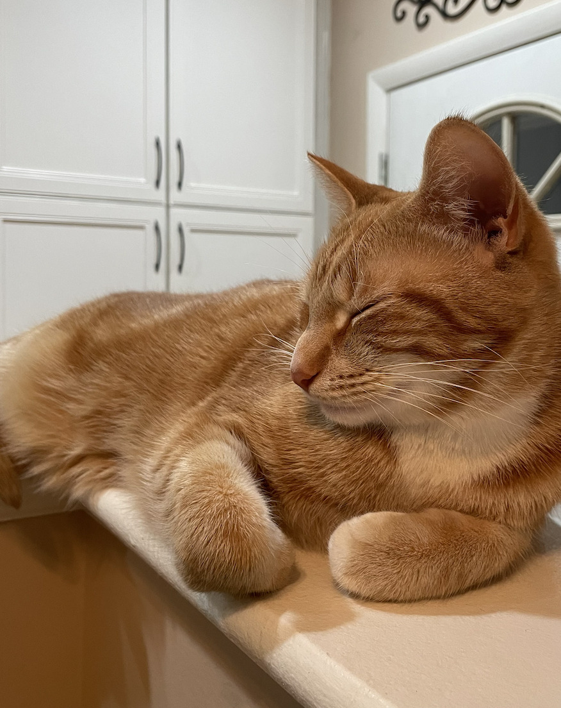

Meet the adorable cats of SI 339!
These pets are all beautiful and special in the own individual ways.
Just look at Ador (above), a cute kitty that's enjoying a nap as you scroll.
Today, we'll be showcasing some of the best; enjoy!
Photo Gallery


Cheeto is a cat who likes to eat a lot and play a lot. He has an obsession with his grandpa (human) and tries to get outside every single day.
If he isn’t causing problems, he is usually hiding in a seven foot tall cat tree and sleeping.
Another name for Cheeto is Chicken, because sometimes he sits very scrunched up and ends up looking like a rotisserie chicken.
He was nicknamed this by one of his friends, and now he understands it as his own name. He is about six years old and still acts like a younger cat, despite being middle-aged.
Likes
- Justin
- Harish
- Heman
- Havi


Milktea is a Scottish fold with a personality of a princess. She loves her veggies and refuses to eat anything dropped on the ground.
She makes it clear when she has a demand of any sort by complaining in a loud, distinguished manner.
If what she says could be translated, it probably would be, “This is atrocious, the water container has been empty for the 3rd time this week. I want to see the manager.”
Despite her cuteness and royalty, she actually suffers from a genetic disorder intentionally brought upon by humans.
I highly advise against keeping a Scottish fold because they are in constant pain when they reach around 2 years old.
Cartilage accumulates around her paw joints and tail joints and it becomes painful for them to even walk.
She is living evidence of human’s cruelty of breeding animals to look pretty while sacrificing the animals’ health.


Luke is a six-year-old white cat; he is very energetic and likes to play fetch. Luke has one brother named Jesse. Luke’s favorite thing to eat are chicken cat treats.
Luke is very badly behaved. He often jumps up on furniture and drinks out of people’s water glasses. He also steals people’s jewelry and hides it in his bed.
Luke knows several commands; he can sit, jump, follow, play fetch, and give people his paw.
Likes
- Adam
- Sami
- Alex


Lucy is a 17-year-old calico that I’ve had since I was 5, she has pretty much grown up with me my whole life.
Even though she’s old she’s still kickin’ it and enjoys running around the house at 4am.
Her favorite foods include anything but her kibble. She enjoys sunbathing and long naps, along with lots of petting.
However, she hates getting her stomach rubbed.
Likes
- Nara
- Clark
- Justin


Jax is a kitten, about five months old that I found this summer at a gas station while traveling to Marquette, Michigan.
He was scared and malnourished, crying in the parking lot.
I took him with me and after some healthy meals and a trip to the vet he is doing great!
My roommates and I just recently moved and Jax has been having a hard time getting used to the large house since we were previously living in a small apartment.
Jax is incredibly playful and loves to run around, but when he is sleepy he is happy to be held.
Likes
- Audrey
- Will
- Matt